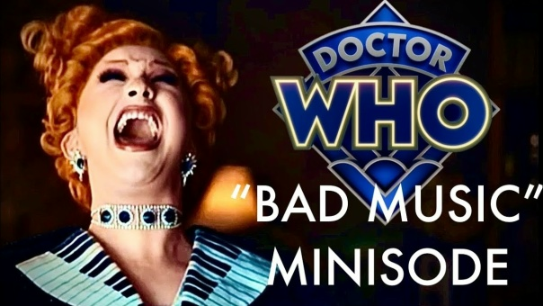

Эра Пятнадцатого Доктора
<<< НАЗАД ||| Плохая музыка ||| ДАЛЬШЕ >>>
+ Нейроозвучка [Яндекс]
Субтитры: Русские (FreeMan646)

Bad Music (TV story)
мини-эпизод для ВВС Proms
26 августа 2024
Формат: мини-эпизод, 4 минуты 35 секунд
| Варианты озвучек: | * отсутствуют |
|---|---|
| Скачивание и просмотр: |
По сюжету Маэстро, бог музыки, собирается взять управление оркестром и сыграть плохую песню. Он исполняет песню «У меня есть пес», которую считает худшей за все времена. В итоге Доктор объясняет аудитории, что плохой музыки не бывает.

